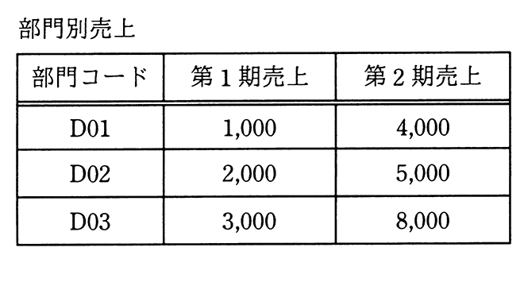
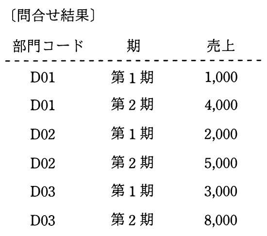

“部門別売上”表から，部門コードごと，期ごとの売上を得るSQL文はどれか。


ア
SELECT 部門コード, '第1期' AS 期, 第1期売上 AS 売上
FROM 部門別売上
INTERSECT
(SELECT 部門コード, '第2期' AS 期, 第2期売上 AS 売上
FROM 部門別売上)
ORDER BY 部門コード, 期
イ
SELECT 部門コード, '第1期' AS 期, 第1期売上 AS 売上
FROM 部門別売上
UNION
(SELECT 部門コード, '第2期' AS 期, 第2期売上 AS 売上
FROM 部門別売上)
ORDER BY 部門コード, 期
ウ
SELECT A.部門コード, '第1期' AS 期, A.第1期売上 AS 売上
FROM 部門別売上 A
CROSS JOIN
(SELECT B.部門コード, '第2期' AS 期, B.第2期売上 AS 売上
FROM 部門別売上 B) T
ORDER BY 部門コード, 期
エ
SELECT A.部門コード, '第1期' AS 期, A.第1期売上 AS 売上
FROM 部門別売上 A
INNER JOIN
(SELECT B.部門コード, '第2期' AS 期, B.第2期売上 AS 売上
FROM 部門別売上 B) T ON A.部門コード = T.部門コード
ORDER BY 部門コード, 期